著作目錄
| 書名 | 封面 | 內容 | 出版時間 | 出版社 | 開本/ 頁數 |
|---|---|---|---|---|---|
| 《此處有仙桃》 | 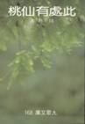 | 散文集 | 1985年6月 | 九歌出版社 初版 | 32開 / 255頁 |
| 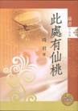 | 2006年6月 | 九歌出版社 紀念珍藏版 | 25開 / 256頁 | ||
| 《琦君寄小讀者》 | 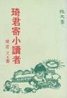 | 散文集 | 1985年6月 | 純文學出版社 | 32開 / 219頁 |
| 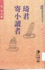 | 1996年8月 | 建行文化出版 | 新25開 183頁 | ||
| 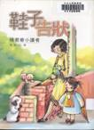 | 2004年8月 | 九歌出版社 更名《鞋子告狀—琦君寄小讀者》 | 25開 / 173頁 | ||
| 《玻璃筆》 | 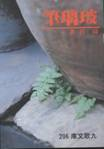 | 散文集 | 1986年11月 | 九歌出版社 | 32開 / 251頁 |
| 《琦君讀書》 | 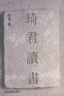 | 評論集 | 1987年10月 | 九歌出版社 | 32開 / 285頁 |
| 《我愛動物》 | 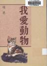 | 評論集 | 1988年3月 | 洪範書店 | 32開 / 212頁 |
| 《涼風山莊》 |  |
兒童翻譯小說 | 1988年4月 | 純文學出版社 | 70頁 |
| 《青燈有味似兒時》 | 散文集 | 1988年7月 | 九歌出版社 初版 | 32開 / 250頁 | |
| 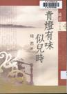 | 2004年10月 | 九歌出版社 二版 | 25開 / 240頁 | ||
| 《比伯的手風琴》 |  |
兒童翻譯小說 | 1989年 | 漢藝色研出版社 | 165頁 |
| 《李波的心聲》 |  |
兒童翻譯小說 | 1989年 | 漢藝色研出版社 | 173頁 |
| 《淚珠與珍珠》 | 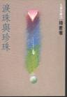 | 散文集 | 1989年10月 | 九歌出版社 | 32開 / 230頁 |
| 《文與情》 | 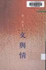 | 散文小說合集 | 1990年8月 | 三民書局 | 新25開 / 188頁 |
| 《母心‧佛心》 | 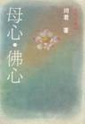 | 散文集 | 1990年10月 | 九歌出版社 初版 | 32開 / 237頁 |
| 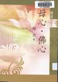 | 2004年12月 | 九歌出版社 二版 | 25開 / 222頁 | ||
| 《一襲青衫萬縷情》 | 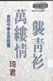 | 散文集 | 1991年7月 | 爾雅出版社 | 32開 / 235頁 |
| 《橘子紅了》 | 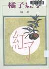 | 小說集 | 1991年9月 | 洪範書店 | 32開 / 194頁 |
| 《愛吃糖的菲利》 |  |
兒童翻譯小說 | 1992年2月 | 九歌出版社 原著 >約翰‧保利斯 | 21x15cm / 139頁 |